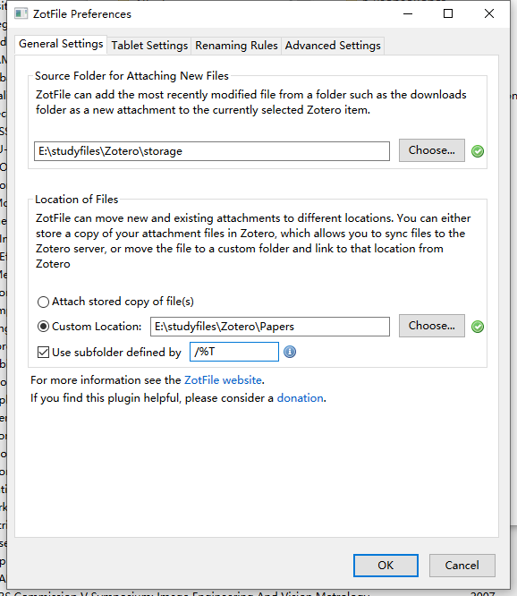
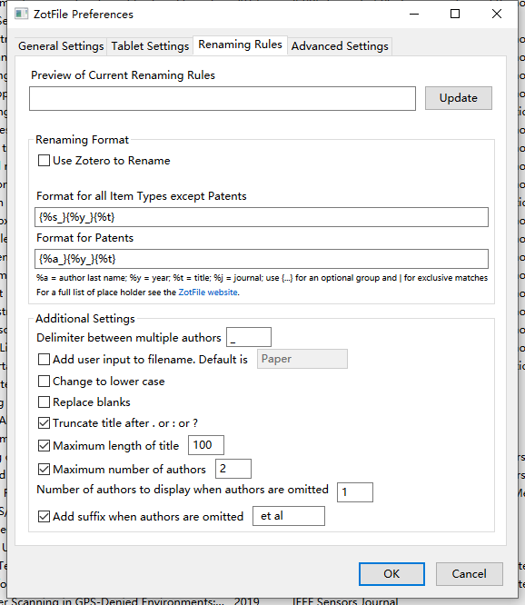

初衷
文献管理其实是一项需要在最开始就把工作流做好的，事半功倍。之前使用了如下的方案进行文献管理：
EndNote，写文章插入citation很好用，各种标签功能也挺好用，但是云盘空间太小，无法和pdf联动，而我喜欢把笔记写在pdf上，EndNote似乎无法直接把pdf导入，只能管理基本的文献元数据，没达到我想的那种方式。后面也就只在写文章需要添加引用的时候用了。中文比较友好。奈何我需要先写SCI。
Mendeley，英文非常好，但是多平台同步太慢了，经常卡死，而且后面客户端也不更新了。无法使用。用起来很气人。
NoteExpress一开始不好用，结果后面变好用了之后也没注意到。似乎写中文毕业论文也比较好用。主要是简单。
Zotero在多年前用过，当时一系列插件还不是很健全，用起来不是很美。就没用了。
导致现状就是：笔记写在了pdf文件上，采用本地文件夹管理的方式，文件多了+时间长了+ipad联动等需求激增，想好好管理一下，发现一时间竟然没有合适的方案。
方案
zotero+坚果云
zotero安装和坚果云申请就不说了。网上一大堆。虽然坚果云每个月上传下载有流量限制，但是忍过最初的几个月之后，剩下的时候不需要全部更新，应该也能顶住。
插件
ZotFile

Source Folder for Attaching New Files:存放由zotero管理文件时，pdf等文件的位置，storage下是采用一种zotero默认8位数字和字母的组合的编码方式存储的文件，以.zip方式存储，根本无法和pdf文件名字对应。无法直接使用。
Location of Files:自定义的文件统一存放路径，可以根据设置好的文件/文件夹重命名方式将导入的文献重新按照统一的格式移动到这个路径中。（也就是说如果是本地文件导入了之后，这里会重新生成一个新的换了名字的相同文件，旧的就可以删掉了，每个新增的文件都需要手动移动一下位置，可以批量操作）。
- use subfolder defined by /%c（%T是按照文献类别来分），这里设置的是按照我在zotero中分类的条目进行的文章归纳，这样带来的好处是，分享到其他地方仍然可以看到简单的分档归纳，问题是，文章如果想给多个分类条目，就会导致文章重复出现，因此需要在zotero中使用tag进行管理。

这里选择的文件重命名方式是“期刊简写_年份_文章名字”的方式。因为文章良莠不齐，根据期刊名字可以迅速筛掉一部分文献，根据年限可以找到最近的文章，最后才看名字，如果不相关的肯定不会下载。这种方式非常适合将pdf导出的时候，没有zotero这一套，只有pdf文件也可以进行学习。
工作流
移动端负责的是文献阅读与标注，在 Zotero 完成文献的管理后，将想看的文献发送到 iPad 上进行阅读，完成 ZotFile 的设置后，对于我们想要发送到 iPad 上的文献，右键单击，依次选择「Manage Attachments 」->「Send to subfolders on tablet」，就能够将文献按照其在 Zotero 自定义分类中的情况，创建相应的子文件夹，发送到先前设定到的目标位置。
这里其实还有一个选项，直接就是「Send to tablet」，这个选项只会将 PDF 文件发送过去，而不会创建子文件夹，对于一些临时看的文献可以选择该选项。我选择将文献发送到 iCloud 的一个文件夹中，便于在 iPad 上进行访问。发送完成后，可以在 Zotero 的侧边栏发现新增了两个分类，分别为「Tablet Files」和「Tablet Files (modified) 」，前者里面放的就是我们发送到平板上的所有文件（其实这也是类似于打标签）。
发送到 iPad 后，就可以利用各种 PDF 阅读器对文献进行标注。自带的「文件」能够进行简单的批注，实际上手时也发现足够自己使用了，但是有一个我个人不太喜欢的问题，就是「文件」会挡住文献的右边缘，不利于充分利用空间。为了尽可能模拟在纸张上阅读文献的感觉，我找到了一个叫做「PDF Viewer」的免费软件，解决了边缘空白无法利用的问题。
在 iPad 上完成文献的阅读后，进入 Zotero，在「Tablet Files」分类中找到想要取回的文献，右键单击，依次选择「Manage Attachments 」->「Get from Tablet」，就可以将标注后的 PDF 文件重新取回到 Zotero 的文件存储位置，并覆盖原来的文件，使得标注的内容得以同步。标注后的 PDF 文件体积通常会变大不少。
参考
- http://zotfile.com/index.html#renaming-rules
- https://www.zhihu.com/question/23572825
- https://andyluojj.github.io/post/zotero-kua-she-bei-wen-xian-guan-li/
- https://blog.csdn.net/haoji007/article/details/127623641
jaseminum
管理中文文献的。
IF
这个插件似乎没啥用。
Zotero-Better-Notes
官方笔记见这里。
Chartero
浏览阅读的历史记录，可以看出本月看了多少文章。
创建的Chartero文件不要删掉，不然会丢掉之前的阅读记录。官方文档见这里。
阅读文章的时候，想随时翻译。
Q I want to translate manually. A
Go to Edit->Preferences->PDF Translate->General,
uncheck the Automatic Translation. Click the
translate button on the popup or sidebar to translate.
Q I want a translate shortcut. A
Press shortcut Ctrl+T after you selected some text. If you
are in the collection view, the titles' translation will show/hide.
Zotero-Tag
官方文档在这里。可以给文章打上颜色标签，阅读的时候更容易找到想要的那个标签。
多平台同步
多平台同步的思路和流程见这里：

如果想换电脑了，而坚果云有限制（下载限制一个周期内3G）。那么可以直接把存放文件库的那个文件夹直接全部拷贝到新的电脑上，然后按照下面的设置新的路径：

然后在新电脑上就可以直接打开啦，官方文档参见这里。坚果云会自动进行同步，将旧有的文件信息不动（不会耗费流量），修改的进行同步。
- 注意：不要手贱删掉zotero云端的文章，不然同步的时候，本地的文件也就没有了。
参考
- https://sspai.com/post/64283
其他
PDF全文索引
如果发现之前的文章找不到对应的文章了，只剩下一个假索引说明，是动了zotero的原始文件存储的位置，需要重新生成一下索引就可以了。一般来说默认新导入的文章是会自动更新索引的。Zotero空闲时会自动对PDF进行索引。但是如果发现打不开pdf了，手动更新一下就行。
文献导入后不同图标的含义
这些都是zotero自动识别出来的，可以修改。
白色+横道：期刊
白色+横道+两个小人：会议
白色+黄色铅笔：arxiv
- 如果发现导入的pdf自动检索不出来，可以手动更新，找到这个bibtex文件，然后导入的时候选择从剪贴板导入，然后和之前那个错误的合并一下就行。
文献导入
导入一篇文献需要完成三步操作：拖入 PDF 文献，等待元数据检索完成并检查（或先导入元数据再拖入 PDF 文件），最后右键选择 Rename Attachments。
或者直接在浏览器端，使用zotero connector将文件导入。这种平时浏览的话比较方便。
文献删除
一般来说导入的文章会存成软链接的方式，因此直接在zotero删除条目时，只会删掉软链接，文章还是不动的，可以在工具->管理附件->转换已链接文件为已存储文件。这样就一下子都可以把文件都删掉。
文献元数据更新
由于某些文献发表时间太久了，或者是发表在某个野鸡期刊上的，可能找不到doi号，进而也无法更新元数据。这种类型的pdf就不管了，文章水平也不怎么样，可以看，但是引用意义不大。
更新方式
- 选中文献，然后在工具中选择抓取DOI，如果能找到，那么恭喜，可以选择更新元数据，条目信息就更新了，文章也可以继续被更新；
- 如果找不到，那么在crossref上搜一下，找不到就没办法了。
https://formlesslab.top/2021/10/13/%E5%AD%A6%E6%9C%AF/Zotero/Zotero-%E6%89%B9%E9%87%8F%E4%BF%AE%E6%94%B9%E5%85%83%E6%95%B0%E6%8D%AE/
信息中各个label中的意义
因为添加了Zotero IF Pro Max破解版（原版好像有问题）等插件，因此会有一些额外的bonus的数据给出来。
馆藏目录表示的是影响因子，但是不知道是加了哪个插件，现在影响因子和期刊标签，引用量都可以显示出来了。
存档位置表示的是引用量
索书号：对应JCR分区，只对SCI有效
只有使用了zotero自带的pdf阅读器才能记录有zotero style和chatero的进度条信息产生，但是pdf的注释需要手动导出才能将注释记录到pdf中。
参考链接
- http://zotfile.com/index.html#renaming-rules
- https://zhuanlan.zhihu.com/p/31453719
- https://zhuanlan.zhihu.com/p/108366072